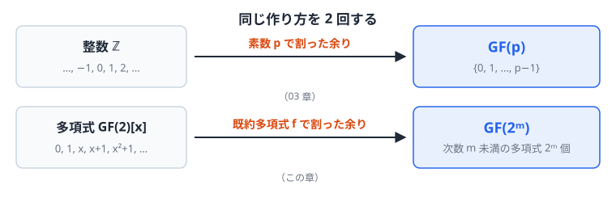
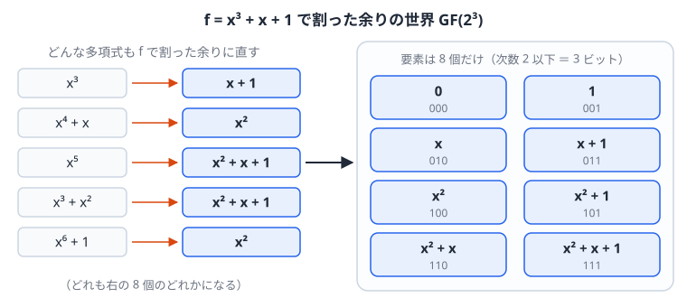
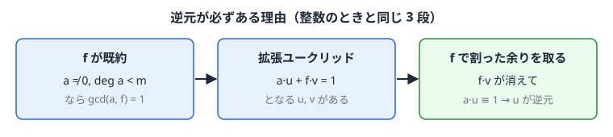
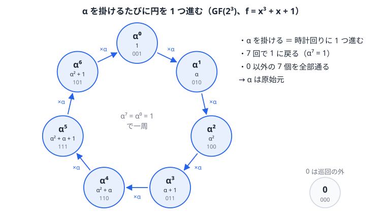
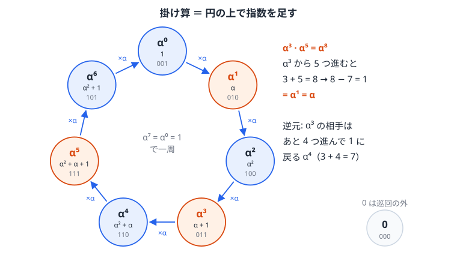
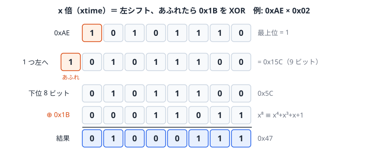

Chapter 05
拡大体 GF(2^m) — 1 バイトが 1 つの「数」になる世界
この章の位置づけ. 03 章では整数を素数\(p\)で割った余りの世界として\(\mathrm{GF}(p)\)を作った。 04 章では多項式の世界と、そこでの「素数」にあたる既約多項式を用意した。 この章では同じ論法を多項式に適用して\(\mathrm{GF}(2^m)\)を作る。
材料 「素数」で割る できる体 03 章 整数\(\mathbb{Z}\) 素数\(p\) \(\mathrm{GF}(p)\) 本章 多項式\(\mathrm{GF}(2)[x]\) 次数\(m\)の既約多項式\(f\) \(\mathrm{GF}(2^m)\) \(m = 8\)とすると、1 バイト（8 ビット）が 1 個の要素になり、バイトどうしの四則演算が自由にできる。AES やリード・ソロモン符号はこの体の上で計算する。

この章で使う既出の用語（定義は各リンク先）. 群・巡回群・生成元・位数・ラグランジュの定理の帰結（02 章 1 節）、零因子（02 章 2 節）、体・標数（02 章 3 節）、 原始元（03 章 3 節）、要素数は\(p^m\)に限ること（03 章 5 節）、 多項式の除算と合同式\(\equiv \pmod f\)（04 章 2 節）、既約多項式・因数（04 章 3 節）、原始多項式（04 章 4 節）、最大公約多項式と互除法（04 章 5 節）
1. 構成 — 既約多項式で割った余りの世界
定義
次数\(m\)の既約多項式\(f\)を 1 つ選ぶ。\(\mathrm{GF}(2^m)\)の要素は、\(f\)で割った余りとして現れる多項式、すなわち次数\(m\)未満の多項式
の全体である。係数\(m\)個がそれぞれ 0 か 1 なので、要素数は\(2^m\)個である。係数を並べると\(m\)ビットのビット列になる。

演算は、多項式として計算してから\(f\)で割った余りを取る。足し算は係数ごとの XOR なので次数が上がらず、割る必要はない。掛け算は次数が\(m\)以上になりうるので、\(f\)で割った余りに直す。 結合律・分配律などは多項式の計算からそのまま引き継がれる。途中で余りに置き換えてもよいこと（04 章 2 節）により、どの順で余りを取っても結果は変わらない。
なぜ体になるのか（逆元の存在）
体であるための残りの条件は、0 以外のすべての要素が掛け算の逆元を持つことである。
方針: 整数で「\(p\)が素数なら\(\gcd(a, p) = 1\)、したがって拡張ユークリッドで逆元が作れる」と示したのと同じ流れをたどる。既約性を使うのは\(\gcd(a, f) = 1\)を示す 1 か所だけである。

導出: \(a \neq 0\)、\(\deg a < m\)とし、\(d = \gcd(a, f)\)とおく。 \(d\)は\(f\)の因数なので\(f = d h\)と書ける。\(f\)は既約なので、\(d\)と\(h\)のどちらかは次数 0、つまり定数\(1\)である。 \(h = 1\)なら\(d = f\)だが、\(d\)は\(a\)も割り切るので\(f\)が\(a\)を割り切ることになり、\(0 \neq a\)の次数が\(f\)より低いことに反する。よって\(d = 1\)、すなわち
04 章 5 節の拡張ユークリッドの互除法により、次を満たす多項式\(u, v\)が求まる:
\(f v\)は\(f\)で割り切れるので、\(f\)で割った余りを取ると消えて\(a u \equiv 1 \pmod f\)となる。\(u\)を\(f\)で割った余りが\(a\)の逆元である ∎
例: \(f = x^3+x+1\)、\(a = x^2+x\)。04 章 5 節のステップ 2 の筆算は\(x^3+x+1 = (x+1)(x^2+x) + 1\)を表している（左辺は\(f\)）。\((x+1)(x^2+x)\)を左辺に移項すると、普通の計算どおり符号が変わって
となる。\(\mathrm{GF}(2)\)係数の多項式では\(-1 = 1\)なので引き算は足し算と同じであり（04 章 1 節）、これは
とも書ける。符号を変え忘れたのではなく、標数 2 では\(-\)と\(+\)が同じ意味になるので、どちらで書いても同じ式である。実際に展開すると\((x^2+x)(x+1) = x^3 + x\)で、\(f + x^3 + x = (x^3 + x + 1) + (x^3 + x) = 1\)と確かめられる。 \(f\)は\(f\)で割り切れるので\((x^2+x)(x+1) \equiv 1 \pmod f\)であり、\(x^2+x\)（ビット\(110\)）の逆元は\(x+1\)（ビット\(011\)）である。
\(f\)が可約だと体にならない: たとえば\(f = x^2 = x \cdot x\)で割った余りの世界では\(x \cdot x \equiv 0\)なのに\(x \neq 0\)で、\(x\)は零因子である。 もし\(x\)に逆元\(u\)があれば、\(x \cdot x \equiv 0\)の両辺に\(u\)を掛けて\(x \equiv 0\)となり矛盾する。したがって\(x\)は逆元を持たない。
原始多項式である必要はない: 体になるために使ったのは「\(f\)が既約」ということだけで、原始多項式（04 章 4 節）である必要はない。 原始多項式かどうかで変わるのは、\(x\)自身が原始元になるか（\(x\)のべき乗で 0 以外の全要素を巡るか）だけである。 たとえば既約だが原始でない\(f = x^4+x^3+x^2+x+1\)で割った余りの世界も、要素数 16 の体になる。この体では\(x^5 \equiv 1\)なので\(x\)の位数は 5 で原始元ではないが、\(x+1\)の位数は 15 で、\(x+1\)が原始元になる。 2 節では\(x\)が原始元になる原始多項式を選ぶので、\(x\)のべき乗だけで全要素を書き出せる。実用でも、\(\alpha = x\)をそのまま原始元に使えて便利なので原始多項式を選ぶことが多い。
2. GF(2^3) を手で作る — 全要素を書き出す
\(m = 3\)、\(f = x^3 + x + 1\)（04 章 3 節で既約と確認済み）を使う。
1 節の定義どおり、この体の要素は次数 2 以下の多項式 8 個である:
| 多項式 | \(0\) | \(1\) | \(x\) | \(x+1\) | \(x^2\) | \(x^2+1\) | \(x^2+x\) | \(x^2+x+1\) |
|---|---|---|---|---|---|---|---|---|
| ビット | 000 | 001 | 010 | 011 | 100 | 101 | 110 | 111 |
生成元 α によるべき表現
要素 x を掛けていく: 要素\(x\)（ビット\(010\)）を何度も掛けてみる。\(x \cdot x = x^2\)は次数 2 なのでそのまま要素である。次の\(x^2 \cdot x = x^3\)は次数 3 なので、\(f\)で割った余りに直す:
余りは\(011\)、つまり\(x + 1\)である。したがってこの体の中では、要素\(x\)を 3 回掛けた結果は要素\(x+1\)に等しい。
\(x\)に\(\alpha\)という名前を付ける: ここで記号の問題が起きる。\(x\)は、\(f(x) = x^3 + x + 1\)のように多項式の変数（値を代入する文字）としても使っている。そのまま「\(x^3 = x + 1\)」と書くと、\(x\)を求める方程式のように見えてしまう。 そこで、この体の 1 つの要素である\(x\)（ビット\(010\)）を、\(\alpha\)という名前で呼ぶ。\(\alpha\)は変数ではなく、ビット\(010\)という決まった要素の名前である。以後、多項式の変数としての\(x\)と、要素としての\(\alpha\)を区別して書く。 名前を変えただけなので、要素はすべて\(x\)を\(\alpha\)に書き換えて表せる。たとえばビット\(011\)の要素は\(\alpha + 1\)、ビット\(110\)の要素は\(\alpha^2 + \alpha\)である。上の筆算の結果は
と書ける。これは方程式ではなく、要素どうしの等式（「ビット\(010\)を 3 回掛けるとビット\(011\)になる」）である。
複素数の\(i\)との比較: これは実数から複素数を作るときの\(i\)と同じ考え方である。\(x^2 + 1 = 0\)を満たす実数は無いが、「\(i^2 = -1\)を満たす新しい数\(i\)」を加えて、\(a + bi\)の形の数の世界を作る。 ここでも、\(\mathrm{GF}(2)\)には\(f(x) = x^3 + x + 1 = 0\)を満たす数（0 と 1 を入れても\(f(0) = f(1) = 1\)）は無いが、\(f\)で割った余りの世界を作ると、その中の要素\(\alpha\)を\(f\)に代入して
となる。\(\alpha\)はこの体の中での\(f\)の根であり、体の要素は\(a_2\alpha^2 + a_1\alpha + a_0\)（\(a_i \in \{0, 1\}\)）の形で書ける。\(a + bi\)で複素数を書くのと同じである。
この関係を使うと、\(\alpha\)のべき乗は「1 つ前に\(\alpha\)を掛け、\(\alpha^3\)が出たら\(\alpha+1\)に置き換える」ことで順に求まる:
| べき | 計算 | 多項式表現 | ビット | 10 進 |
|---|---|---|---|---|
| \(\alpha^0\) | — | \(1\) | 001 | 1 |
| \(\alpha^1\) | — | \(\alpha\) | 010 | 2 |
| \(\alpha^2\) | — | \(\alpha^2\) | 100 | 4 |
| \(\alpha^3\) | \(\alpha^3 = \alpha+1\) | \(\alpha+1\) | 011 | 3 |
| \(\alpha^4\) | \(\alpha(\alpha+1) = \alpha^2+\alpha\) | \(\alpha^2+\alpha\) | 110 | 6 |
| \(\alpha^5\) | \(\alpha(\alpha^2+\alpha) = \alpha^3+\alpha^2 = \alpha^2+\alpha+1\) | \(\alpha^2+\alpha+1\) | 111 | 7 |
| \(\alpha^6\) | \(\alpha(\alpha^2+\alpha+1) = \alpha^3+\alpha^2+\alpha = \alpha^2+1\) | \(\alpha^2+1\) | 101 | 5 |
| \(\alpha^7\) | \(\alpha(\alpha^2+1) = \alpha^3+\alpha = 1\) | \(1\) | 001 | 1 |
\(\alpha^7 = 1\)で一周し、\(\alpha^1\)から\(\alpha^7\)までに 0 以外の 7 個の要素がすべて 1 回ずつ現れる。\(\alpha\)の位数は 7 で、\(\alpha\)は原始元である。これは\(f\)が原始多項式（04 章 4 節）であることの言い換えである。

下の図で既約多項式を選ぶと、同じように\(\alpha = x\)のべき乗を順に計算した表が表示される。\(x^3+x+1\)、\(x^3+x^2+1\)、\(x^4+x+1\)は原始多項式なので 0 以外の全要素を巡る。\(x^4+x^3+x^2+x+1\)は既約だが原始でないので、\(\alpha^5 = 1\)で一周してしまい、15 個のうち 5 個しか現れない（それでも 1 節のとおり体にはなっている）。
演算の実例

加算はビット列の XOR: \(\alpha^3 + \alpha^5 = 011 \oplus 111 = 100 = \alpha^2\)
乗算は指数の足し算: \(\alpha^3 \cdot \alpha^5 = \alpha^8 = \alpha^7 \cdot \alpha = \alpha\)。\(\alpha^7 = 1\)なので、指数は 7 で割った余りだけを見ればよい。 多項式で直接計算しても一致する: \((\alpha+1)(\alpha^2+\alpha+1) = \alpha^3+1 = (\alpha+1)+1 = \alpha\)
逆元は指数を 7 から引く: \(\alpha^3\)の逆元は\(\alpha^{7-3} = \alpha^4\)。\(\alpha^3 \cdot \alpha^4 = \alpha^7 = 1\)である。 1 節の例で求めた「\(110\)の逆元は\(011\)」は、表では「\(\alpha^4\)の逆元は\(\alpha^3\)」であり、一致している。
除算は逆元を掛けること: \(\alpha^5 / \alpha^3 = \alpha^5 \cdot \alpha^4 = \alpha^9 = \alpha^2\)
対数表による実装
上の表を 2 つの向きに引けるようにしておくと、四則演算が表引きで済む。
- 対数表: ビット列 → 指数\(i\)（\(\alpha^i\)のどれか）。0 には指数が無いので別扱いにする
- 逆対数表: 指数\(i\) → ビット列
足し算は XOR、掛け算は対数表で指数に直して足し、\(2^m - 1\)で割った余りを逆対数表でビット列に戻す。\(\log(ab) = \log a + \log b\)と同じ考え方である。 \(\mathrm{GF}(2^8)\)なら各 256 項の表 2 枚で済み、リード・ソロモン符号（11 章）の実装でよく使われる。
03 章の GF(4) の正体
03 章 5 節で演算表だけを与えた\(\mathrm{GF}(4) = \{0, 1, \alpha, \beta\}\)は、\(m = 2\)、\(f = x^2+x+1\)（次数 2 の唯一の既約多項式）で作った体である。 要素は\(0, 1, x, x+1\)の 4 個で、2 節と同じく要素\(x\)を\(\alpha\)と呼ぶ（体が違うので、2 節の\(\alpha\)とは別の要素である）。\(x^2\)を\(f\)で割った余りは\(x+1\)なので\(\alpha^2 = \alpha + 1\)であり、残りの要素\(\alpha + 1\)が 03 章の\(\beta\)である。 \(\alpha^2 = \alpha + 1\)と\(1 + 1 = 0\)だけを使うと、03 章の表が再現できる:
- \(1 + \alpha = \beta\)（\(\beta\)の定義）
- \(\alpha \cdot \alpha = \alpha^2 = \alpha + 1 = \beta\)
- \(\alpha \cdot \beta = \alpha(\alpha + 1) = \alpha^2 + \alpha = (\alpha+1) + \alpha = 1\)
- \(\beta \cdot \beta = (\alpha+1)^2 = \alpha^2 + 1 = (\alpha+1) + 1 = \alpha\)（標数 2 なので\((\alpha+1)^2 = \alpha^2 + 2\alpha + 1 = \alpha^2 + 1\)）
3. GF(2^8) — 実務で使われる 1 バイトの体
AES の場合
AES は\(f = x^8 + x^4 + x^3 + x + 1\)（0x11B）を使う。要素は 0x00〜0xFF の 256 個で、各バイトのビット列を多項式の係数と見る。
\(x\)倍（xtime）: \(x\)を掛けると各項の次数が 1 上がるので、ビット列では 1 ビット左シフトになる。 最上位ビット（\(x^7\)の係数）が 1 だった場合は\(x^8\)の項が生じ、8 ビットからあふれる。\(x^8 \equiv x^4+x^3+x+1 \pmod f\)なので、あふれた\(x^8\)を捨てる代わりに\(x^4+x^3+x+1\)、つまり 0x1B を XOR で足す。0x1B は 0x11B の下位 8 ビットである。

uint8_t xtime(uint8_t a) {
return (a << 1) ^ ((a & 0x80) ? 0x1B : 0x00);
}uint8_tに入れた時点で 9 ビット目は捨てられるので、コードでは XOR 0x1B だけを書けばよい。
例 1: \(\texttt{0x57} \times \texttt{0x02}\)。\(\texttt{0x57} = 01010111_2\)は最上位ビットが 0 なので、左シフトするだけで\(\texttt{0xAE}\)。
例 2: \(\texttt{0xAE} \times \texttt{0x02}\)。\(\texttt{0xAE} = 10101110_2\)は最上位ビットが 1 なので、左シフトして下位 8 ビットを取った\(\texttt{0x5C}\)に 0x1B を XOR して\(\texttt{0x5C} \oplus \texttt{0x1B} = \texttt{0x47}\)。
一般の乗算は、片方をビットに分解し、xtime の繰り返しと XOR で組み立てる。 例 3: \(\texttt{0x57} \times \texttt{0x13}\)。\(\texttt{0x13} = 00010011_2 = \texttt{0x10} \oplus \texttt{0x02} \oplus \texttt{0x01}\)である。xtime を繰り返すと
| \(\times\texttt{0x01}\) | \(\times\texttt{0x02}\) | \(\times\texttt{0x04}\) | \(\times\texttt{0x08}\) | \(\times\texttt{0x10}\) | |
|---|---|---|---|---|---|
| \(\texttt{0x57}\) | 0x57 | 0xAE | 0x47 | 0x8E | 0x07 |
となるので、\(\texttt{0x57} \times \texttt{0x13} = \texttt{0x07} \oplus \texttt{0xAE} \oplus \texttt{0x57} = \texttt{0xFE}\)。
AES の MixColumns でバイトに 0x02 や 0x03 を掛ける操作は、この\(\mathrm{GF}(2^8)\)上の掛け算である（14 章）。
リード・ソロモン（QR コード）の場合
QR コードは\(f = x^8+x^4+x^3+x^2+1\)（0x11D）を使う。これは原始多項式なので、\(\alpha = x\)（ビット\(00000010\)、10 進で 2）が原始元であり、\(\alpha^1, \dots, \alpha^{255}\)が 0 以外の 255 個の要素を 1 回ずつ巡って\(\alpha^{255} = 1\)に戻る。
4. 有限体の一般論（まとめの定理）
ここまでの構成を一般化した定理を挙げる。定理 1〜3 は証明が長いので、本シリーズでは事実として引用する。2 節の\(\mathrm{GF}(2^3)\)がそれぞれの実例になっている。
定理 1（存在と一意性）: 任意の素数\(p\)と正整数\(m\)に対し、要素数\(p^m\)の有限体が存在し、同型を除いて一意である。 存在は、次数\(m\)の既約多項式が必ず存在することから、1 節と同じ構成で示される。要素数が\(p^m\)の形に限ることは03 章 5 節で示した。
「同型」とは、要素どうしの 1 対 1 の対応で、足し算と掛け算の結果も対応するもののことである。「同型を除いて一意」とは、どの既約多項式を選んでも、要素の名前が変わるだけで演算の構造は同じ体ができるという意味である。 たとえば\(\mathrm{GF}(2^3)\)は\(x^3+x+1\)で作っても\(x^3+x^2+1\)で作っても同じ構造になる。ただしビット列の値は多項式ごとに異なるので、AES（0x11B）と QR コード（0x11D）のように、同じシステム内では同じ多項式を使う必要がある。
定理 2（乗法群は巡回群）: \(\mathrm{GF}(p^m)\)の 0 以外の要素は、掛け算について位数\(p^m - 1\)の巡回群をなす。すなわち原始元が存在し、0 以外のすべての要素がその累乗で書ける。 2 節で\(\alpha\)の累乗が 7 個すべてを巡ったのはこの例である。ただし\(\alpha = x\)自身が原始元になるのは、\(f\)が原始多項式のときに限る。
系: 0 以外の任意の要素\(a\)について
この系は定理 2 を使わなくても示せる。0 以外の要素は掛け算について要素数\(p^m - 1\)の群をなすので、02 章のラグランジュの定理の帰結から\(a^{p^m-1} = 1\)である。 \(\mathrm{GF}(2^8)\)なら\(a^{-1} = a^{254}\)で、AES の S-box はこの逆元を使う（14 章）。
定理 3（部分体）: 体\(F\)の部分集合で、同じ演算でそれ自身も体になっているものを\(F\)の部分体という。 \(\mathrm{GF}(p^m)\)が\(\mathrm{GF}(p^n)\)を部分体として含むのは、\(n\)が\(m\)を割り切るときに限る。 たとえば\(\mathrm{GF}(2^8)\)は\(\mathrm{GF}(2)\)、\(\mathrm{GF}(2^2)\)、\(\mathrm{GF}(2^4)\)を含むが、\(\mathrm{GF}(2^3)\)は含まない。
定理 4（フロベニウス）: 標数\(p\)の体では、任意の要素\(a, b\)について
方針: 左辺を二項定理で展開し、両端以外の項の係数が\(p\)の倍数になることを示す。標数\(p\)の体では、1 を\(p\)個足すと 0 なので、係数が\(p\)の倍数の項は消える。
例: \(p = 2\)なら\((a+b)^2 = a^2 + 2ab + b^2\)で、\(2ab = ab + ab = 0\)なので\((a+b)^2 = a^2 + b^2\)。
導出: 二項定理より\((a+b)^p = \sum_{k=0}^{p} \binom{p}{k} a^k b^{p-k}\)。\(0 < k < p\)のとき
は整数で、分子は\(p\)を因数に持つ。分母は\(p\)より小さい数の積であり、\(p\)は素数（02 章 3 節より標数は素数）なので分母は\(p\)を因数に持たない。よって\(\binom{p}{k}\)は\(p\)の倍数であり、その項は消える。残るのは\(k = 0\)と\(k = p\)の項\(b^p\)と\(a^p\)だけである ∎
標数 2 では「2 乗すると各項が別々に 2 乗される」。この性質は BCH 符号の共役根（10 章）で使う。
5. 第 I 部のまとめ — 手に入った道具
| 道具 | 内容 | この先の使い道 |
|---|---|---|
| 合同算術（01 章） | \(\bmod\) の四則演算 | RSA、CRC |
| 拡張ユークリッド（01 章 4 節） | 逆元の計算 | RSA 鍵生成、体の逆元 |
| 繰り返し二乗法（01 章 6 節） | 巨大なべき乗 | RSA、DH、楕円曲線 |
| 群・環・体（02 章） | 構造の分類 | 全体の見通し |
| \(\mathrm{GF}(p)\)（03 章） | 素数個の完全な世界 | 数論暗号 |
| 多項式除算（04 章 2 節） | 余りの一意性 | CRC（09 章） |
| 既約・原始多項式（04 章 3〜4 節） | 体を作る材料 | \(\mathrm{GF}(2^m)\)、LFSR |
| \(\mathrm{GF}(2^m)\) | 1 バイト = 1 個の数 | AES（14 章）、RS 符号（11 章） |
これで代数の準備は完了である。次章から誤り検出・訂正に入る。